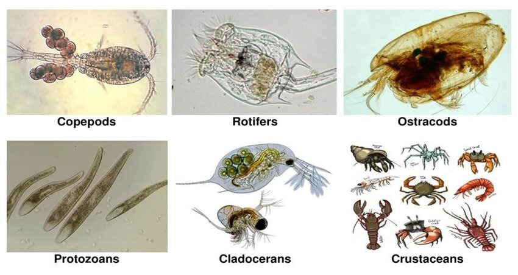

2. Understanding Planktons, Aerosols
2.1 Planktons

2.11 What Are Plankton?
- Definition: Plankton are tiny plants and animals that float in the ocean. They are so small that you usually can't see them without a microscope.
- There are two main types of plankton:
- Phytoplankton (tiny plants)
- Zooplankton (tiny animals)
2.12 Types of Plankton
- Phytoplankton:
- Phytoplankton are like the plants of the ocean. They use sunlight to make their food through photosynthesis, just like plants on land.
- They are important because they produce a lot of the oxygen we breathe and form the base of the ocean's food chain.
- Example: Diatoms and dinoflagellates are types of phytoplankton.
- Zooplankton:
- Zooplankton are tiny animals that eat phytoplankton or other small particles in the water.
- Some zooplankton are the baby stages (larvae) of bigger animals like fish, crabs, or jellyfish.
- Example: Tiny animals like copepods and krill are types of zooplankton.
2.13 Why Are Plankton Important?
- Food Chain:
- Plankton are the base of the ocean food chain. Phytoplankton are eaten by zooplankton, and zooplankton are eaten by bigger animals like fish, whales, and seabirds.
- Without plankton, the whole food chain in the ocean would fall apart!
- Oxygen Production:
- Phytoplankton are like tiny factories that make oxygen. They produce about 50% to 70% of the oxygen on Earth! That means we depend on them for the air we breathe
- Carbon Dioxide Absorption:
- Phytoplankton also help the Earth by taking in carbon dioxide (CO₂) from the atmosphere. This helps reduce the amount of CO₂ in the air, which helps slow down climate change.
2.14 Where Do Plankton Live?
- In the Ocean:
- Plankton live in the upper layers of the ocean where sunlight can reach, because phytoplankton need sunlight to make food.
- Zooplankton float around with the ocean currents, and some of them rise to the surface to eat at night and sink back down during the day to avoid predators.
2.15 What Do Plankton Look Like?
- Plankton come in all sorts of shapes and sizes. Some look like tiny spiky balls, others like chains, or even like tiny jellyfish.
- Even though they are tiny, many plankton are beautiful and colorful under a microscope.
Fun Plankton Facts for Kids
- Invisible Heroes: Even though plankton are tiny, they are some of the most important organisms on Earth. Without them, there wouldn't be enough oxygen for us to breathe!
- Whale Food: Some of the biggest animals in the world, like blue whales, survive by eating tons of tiny plankton like krill.
- Glow in the Dark: Some plankton, like bioluminescent dinoflagellates, can glow in the dark! They make the ocean sparkle at night.
Activities for Students
Microscope Activity:
- If possible, let students observe plankton samples under a microscope or show them pictures of different types of plankton. They can draw what they see and compare the different shapes and sizes.
Plankton Food Chain Game:
- Create a game where students take on the roles of different parts of the ocean food chain (phytoplankton, zooplankton, small fish, big fish, etc.) and show how energy moves through the chain, starting with the plankton.
Plankton Drawing:
- Have students create their own plankton creatures using paper, colors, or modeling clay. They can invent new types of plankton, giving them fun shapes and explaining what they eat and who eats them.
2.2 Aerosols
What Are Aerosols?
- Definition: Aerosols are tiny particles or drops of liquid that float around in the air. These particles can be natural, like dust or sea salt, or man-made.
Particles in the atmosphere are collectively known as aerosols. Particulate aerosols of particular interest to the PACE Mission include:
- Sea Spray - These naturally occurring aerosols are generated by the action of ocean waves, which propel salt particles into the air. When lifted high aloft, clouds can condense around sea salt aerosols. As the oceans cover about two thirds of Earth's surface there is a lot of sea spray in total. However, the amount in any one place tends to be low except for areas of rough seas, such as near the poles, or areas of tropical storms and hurricanes.
- Smoke- Many manmade and natural phenomena send smoke into the atmosphere, including wildfires, agricultural burning, power plants, factory emissions, and car exhaust. These particles can significantly reduce air quality, leading to asthma and respiratory distress among vulnerable people. Over the long term, smoke aerosols absorb and reflect different fractions of sunlight, affecting how much energy Earth absorbs from the Sun.
- Dust - Dust reflects strongly over a wide range of the electromagnetic spectrum from visible to infrared wavelengths. Dust is found where soil is blown loose by the wind, such as deserts and dry lake beds or glaciers. Reflectance values are relatively high because many of the minerals scatter light strongly, and dust storms can contain a lot of dust.
Fun Facts about Aerosols
- Volcanic Aerosols: When a big volcano erupts, it can release so many aerosols that it cools down the Earth for a few years!
- Cloud Makers: Without aerosols, clouds wouldn't form as easily because the tiny water droplets in clouds need something to stick to.
- Traveling the World: Aerosols can travel long distances. For example, dust from the Sahara Desert can blow all the way across the Atlantic Ocean to the Amazon Rainforest!
Activities for Students
- Observe Air Particles: Place a white sheet of paper outside for a few hours, then look at it with a magnifying glass to see the tiny particles that settled on it. This shows how aerosols are all around us, even though we can't always see them.
- Cloud Formation Experiment: Use a bottle, hot water, and a match to demonstrate how aerosols help clouds form. When the match burns, it releases tiny particles (like aerosols), and when hot water vapor cools around those particles, it forms a cloud in the bottle.